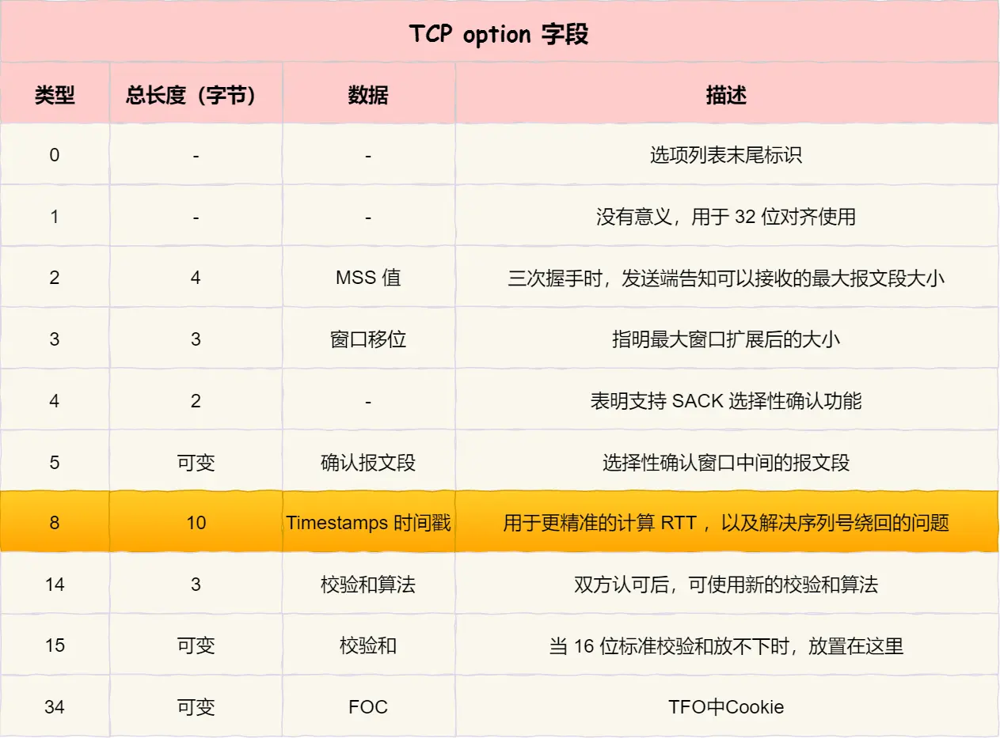

tls加密协议
参考文章
// TLS 1.2 抓包：curl "https://tls-v1-2.badssl.com:1012/style.css"
4.705023 192.168.2.119 44.198.122.103 TLSv1.2 Client Hello
4.908168 44.198.122.103 192.168.2.119 TLSv1.2 Server Hello
4.908168 44.198.122.103 192.168.2.119 TLSv1.2 Certificate, Server Key Exchange, Server Hello Done
4.908619 192.168.2.119 44.198.122.103 TLSv1.2 Client Key Exchange, Change Cipher Spec, Finished
5.111685 44.198.122.103 192.168.2.119 TLSv1.2 Change Cipher Spec, Finished
// TLS 1.3 抓包：curl "https://nghttp2.org/stylesheets/screen.css"
1050.163195 192.168.2.119 139.162.123.134 TLSv1.3 Client Hello
1050.367307 139.162.123.134 192.168.2.119 TLSv1.3 Server Hello, Change Cipher Spec, Encrypted Extensions, Finished
1050.370252 192.168.2.119 139.162.123.134 TLSv1.3 Change Cipher Spec, Finished
